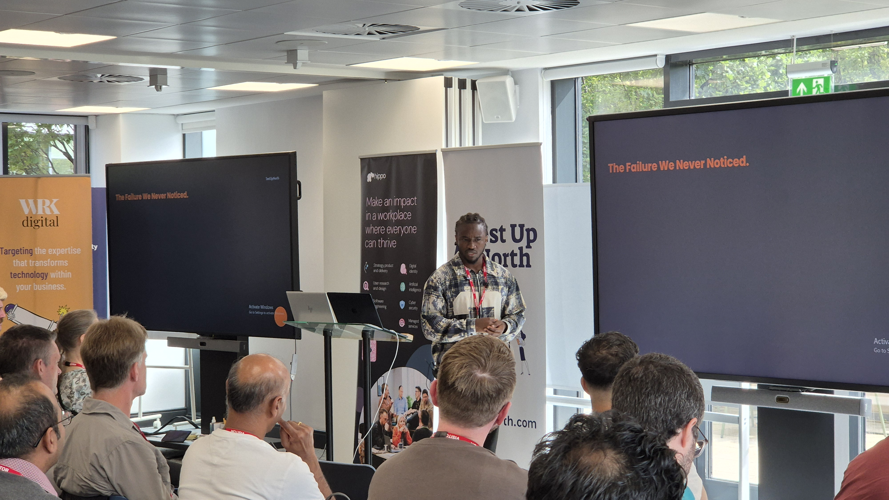
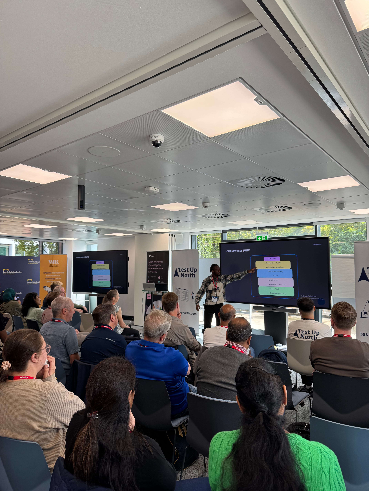

Talk detail
Testing Availability at Scale: How 99.99% Almost Killed Our Mobile App
Test Up North · Leeds, UK · September 2026

Talk detail
Test Up North · Leeds, UK · September 2026
Event overview
This talk walks through a real incident where near-perfect availability metrics masked a systemic problem that traditional testing never caught. As a mobile engineering lead responsible for backend availability, I share how we detected the failure, what our existing test strategy missed, and the hard lessons learned about the difference between testing that a system works and testing that a system holds up.
Event media
